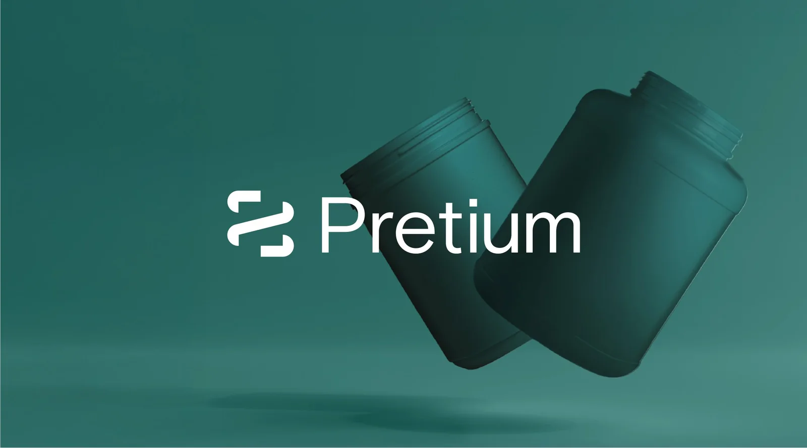
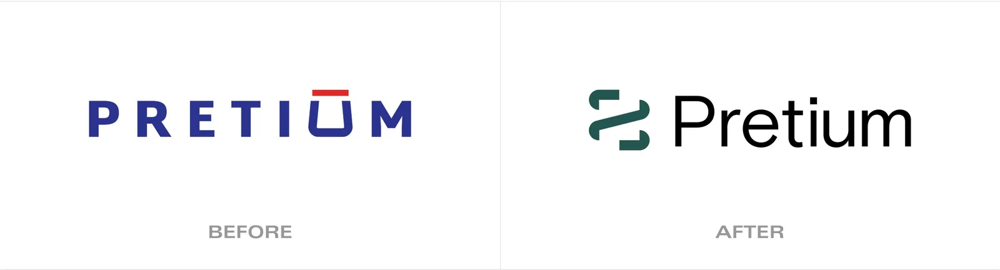
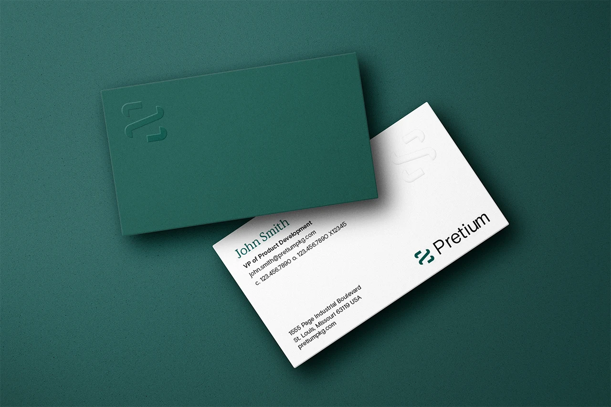

Pretium
Evolving a collection of strong, individual rigid-packaging companies into a single, powerful organization with a shared vision for the future.
A brand project from BasedOn, Brand and Identity Studio. I was the designer on Pretium, working under our creative director, with strategy and copy from the BasedOn strategy and writing teams. All brand work shown belongs to BasedOn and the client, Pretium Packaging.


Many strong companies, one story waiting to be told.
Pretium Packaging had steadily grown into a leader in rigid-packaging manufacturing, with a footprint of regional and specialty facilities and a roster of B2B clients. But years of growth through acquisition had left it with a collection of strong, separate divisions rather than one unified company.
With new executive leadership and a goal to align all of its facilities and 2,900 employees behind a shared vision, Pretium needed a brand that could hold that diversity together, reinforce a sense of being one company, and tell a clear, compelling story to its B2B clients. That's the brief the BasedOn team took on.
Bold dimension over quiet uniformity.
Diving into Pretium and the rigid-packaging industry, the team looked closely at their shared values and uncovered the company's core purpose: to turn bold visions into reality. From emerging businesses needing speed to market, to niche brands looking for custom growth, Pretium stands out for its ability to navigate complexity with a focus on smaller and mid-sized clients, pairing skilled expertise with the agility to move along with them.
Getting there meant really understanding the people behind the brand. I spent time in ideation, sketching directions and pulling references, but the work I care about most happened in the field, visiting Pretium's facilities and interviewing the people who work there and the clients they serve. Seeing the operation firsthand and hearing how people actually talk about the company is what kept the identity grounded in something true, rather than a look applied from the outside. I think you can't design a brand for an audience you haven't taken the time to understand.

A mark born from function.
The new Pretium brandmark is derived from the cap threads that top every bottle, jar, and canister the company makes. A single, continuous line wraps around a square form, a visual rhythm that speaks to containment, protection, movement, and speed. It evokes Pretium's technical heritage and its adaptable innovation.
The palette evolved to a balance of natural vitality and refined craftsmanship: vibrant cool greens with a warm metallic copper accent for a clean, modern look. The typography embraces bold contrast, large headings paired with smaller, focused supporting text, so every message lands with clarity and confidence.



Putting the brand into action.
Eager to put the new identity to work, the team designed and wrote three carousel social posts targeting key client sectors, plus brand-forward messaging and subtle design cues to help Pretium's existing clients recognize the refreshed identity. These posts helped engage clients and gave Pretium's sales team a tool to credential and start conversations.
Pretium publicly launched the full new brand at Natural Products Expo West, with a new on-site product booth that included sample bottles and jars and a looping brand video. Armed with new tools, a dynamic look, and engaging messaging, the team helped Pretium make new industry connections and reconnect with existing clients and employees.
Preliminary results show sustained, organic engagement, with no sign of slowing. Pretium had its story, and a brand bold enough to tell it.